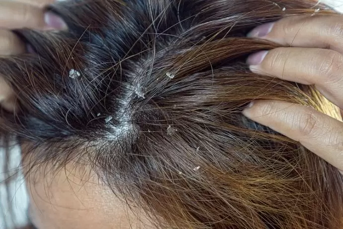

O shampoo é um produto básico e amplamente utilizado nos cuidados diários com os cabelos. Ele é projetado para limpar o couro cabeludo e os fios, removendo o acúmulo de sujeira, oleosidade, resíduos de produtos e impurezas do ambiente. Esse produto de limpeza capilar que contém agentes surfactantes que quebram a gordura e a sujeira, tornando-as solúveis em água. Ele é essencial para manter o cabelo e o couro cabeludo limpos e saudáveis.
Importância
A importância do shampoo é inegável, pois a limpeza regular ajuda a prevenir problemas no couro cabeludo, como caspa e coceira, e também evita que os fios fiquem pesados devido à oleosidade em excesso. Além disso, um couro cabeludo limpo é o cenário ideal para que outros produtos capilares, como condicionadores e tratamentos, funcionem de maneira mais eficaz.

Qual o tipo de shampoo ideal para o seu cabelo?
Escolher o shampoo certo é fundamental para obter os melhores resultados. Aqui estão algumas orientações gerais:
Cabelos lisos:
Shampoos suaves que não pesam nos fios são ideais.
Cabelos ondulados:
Shampoos leves que proporcionam um pouco de hidratação são indicados.
Cabelos cacheados e crespos:
Shampoos com fórmulas hidratantes e mais suaves, para evitar o ressecamento.
Cabelos quebradiços:
Shampoos com ingredientes reparadores, como queratina, podem ajudar a fortalecer os fios.
Cabelos secos:
Shampoos com ingredientes hidratantes, como óleos naturais, são recomendados.
Cabelos super secos:
Shampoos intensamente hidratantes e que ajudam a recuperar a umidade são a escolha certa.
Cabelos oleosos:
Shampoos leves e de limpeza profunda que regulam a oleosidade.
Cabelos super oleosos:
Shampoos adstringentes que controlam o excesso de oleosidade.
Quando há necessidade?
O shampoo é essencial para manter o cabelo e o couro cabeludo limpos, prevenindo problemas como oleosidade excessiva, caspa, coceira e a obstrução dos folículos capilares. Ele é a base para a saúde capilar. A frequência de uso do shampoo varia de pessoa para pessoa. Em geral, a lavagem a cada dois ou três dias é apropriada, mas isso pode depender do seu tipo de cabelo e estilo de vida.
Prejuízos de não fazer:
Negligenciar a limpeza regular do cabelo pode resultar em acúmulo de sujeira, oleosidade e produtos, o que pode obstruir os folículos capilares e prejudicar a saúde do couro cabeludo. Isso, por sua vez, pode levar a problemas como caspa, coceira, cabelos pesados e até mesmo à queda de cabelo. Além disso, cabelos sujos são menos receptivos a outros tratamentos e produtos capilares, o que pode limitar os resultados desejados em termos de aparência e saúde capilar. Em resumo, o shampoo desempenha um papel fundamental nos cuidados com os cabelos. Escolher o tipo certo de shampoo de acordo com o seu tipo de cabelo é crucial para obter os melhores resultados. Não negligenciar a limpeza regular pode prevenir uma série de problemas capilares e manter seus fios e couro cabeludo saudáveis e com boa aparência.
